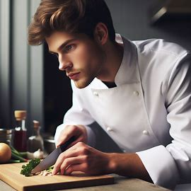
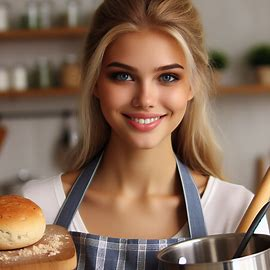

Mejores chefs
- Fran Coto
- Ingeniero informático y estudiante de máster en la UOC, Fran Coto está decidido a conquistar el premio con su pasión y conocimiento en cocina, combinando tecnología y tradición en cada plato.

- Manuel Pérez
- Desde niño, Manuel ha explorado la cocina con amor, aprendiendo y mezclando sabores globales. Su pasión lo lleva a crear experiencias culinarias memorables que reflejan su profundo respeto por la gastronomía.
- Rosa Gil
- Apasionada de los ingredientes locales, Rosa Gil fusiona técnicas innovadoras con recetas tradicionales para ofrecer platos que destacan por su frescura y originalidad, celebrando la cultura culinaria de su región.

- Mónica Romero
- Especialista en repostería, Mónica Romero combina su formación con una creatividad excepcional para producir postres que no solo deleitan el paladar, sino que también cautivan visualmente a todos los comensales.
- Bryan García
- Defensor de la comida saludable, Bryan García demuestra que la cocina simple puede ser extraordinariamente sabrosa y nutritiva, utilizando ingredientes frescos para crear platos que revitalizan y energizan.
- Susana Blanco
- Inspirada en las cocinas mediterránea y asiática, Susana Blanco valora la simplicidad y el equilibrio en sus creaciones, ofreciendo platos que resaltan la belleza y el sabor de cada ingrediente sin complicaciones.